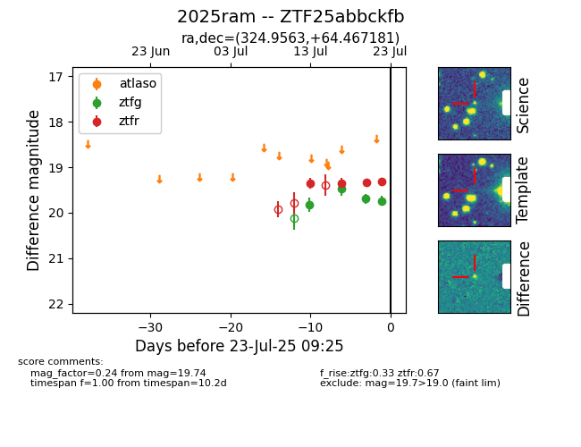

Target ZTF25abbckfb at 2025-07-23 11:52, see:
FINK: fink-portal.org/ZTF25abbckfb
Lasair: lasair-ztf.lsst.ac.uk/objects/ZTF25abbckfb
ALeRCE: alerce.online/object/ZTF25abbckfb
TNS: wis-tns.org/object/2025ram
YSE: ziggy.ucolick.org/yse/transient_detail/2025ram
alt names
ZTF25abbckfb (ztf,fink)
2025ram (tns,yse)
coordinates:
equatorial (ra, dec) = (324.9563,+64.46718)
galactic (l, b) = (104.0448,+8.87535)
photometry
last ztfg=19.74, ztfr=19.32
4 ztfg, 4 ztfr detections
